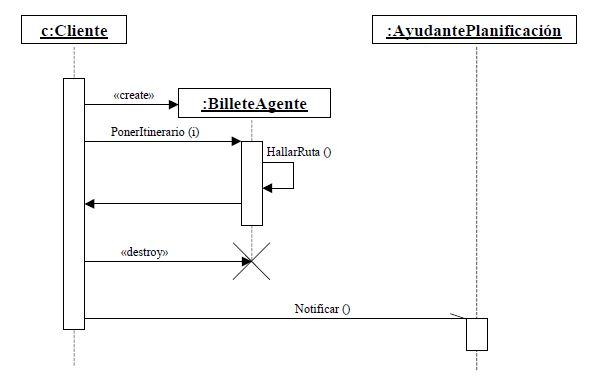

Los diagramas de secuencia pueden mostrar cómo los objetos son creados o destruidos como parte del escenario bien documentado. El mensaje que crea o destruye un objeto es normalmente un mensaje síncrono.
Un objeto puede crear otro objeto por medio de un mensaje, estereotipado como «create». El objeto creado se dibuja con el símbolo que representa al objeto situándolo donde se crea (en el eje vertical). Asimismo se puede eliminar un objeto vía un mensaje, estereotipado como «destroy». Cuando se destruye un mensaje, se marca con una X larga y además la línea de vida del objeto sólo se dibuja hasta el punto en el que se ha eliminado.
En el ejemplo de la Figura 4.3 podemos ver tanto la creación como la destrucción de un objeto de la clase BilleteAgente, por lo que a este tipo de objeto se le cataloga como transitorio. También se puede observar que una instancia de la clase BilleteAgente se envía un mensaje a sí mismo, llamando a la operación HallarRuta.

El tipo de mensaje más común es la llamada, en la cual un objeto solicita una operación de otro objeto (o del mismo). Si un objeto, tal como c de la clase Cliente, llama a la operación PonerItinerario en una instancia de la clase BilleteAgente, entonces dicha operación no sólo tiene que estar definida en la clase BilleteAgente (es decir, tiene que estar declarada en la clase BilleteAgente o en uno de sus padres), sino que también debe ser visible al objeto c que le ha llamado. Cuando el objeto de la clase BilleteAgente devuelve el control al objeto c, se puede modelar como un mensaje síncrono o simple y de forma optativa incluir el valor devuelto.